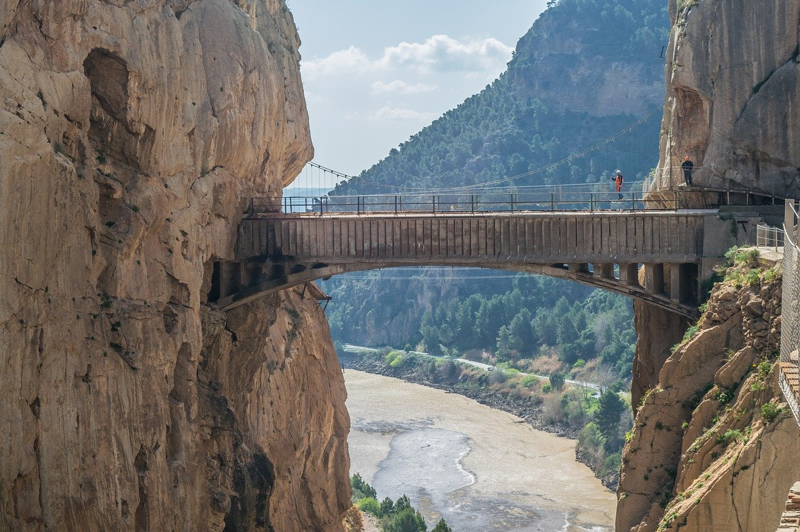

BIENVENIDO
Cuando vengas a Málaga, por qué no descubrir la provincia y sus atracciones turísticas. Hay muchas cosas que hacer en Málaga y a lo largo de la Costa del Sol para divertirse. Los mejores lugares que no deberías perderte. Te ofrecemos la mayor información sobre el entretenimiento y el ocio en Málaga. En esta página vamos a nombrar unas cuantas cosas que puedes hacer, pero si sigues los enlaces descubrirás muchas más.
LEER MASNATURALEZA
PARQUES Y JARDINES

OCIO

CULTURA

Consulta las ofertas y novedades
MUSEOS
Deja que todos tus sentidos disfruten de la gran belleza de nuestros museos.
PLAYAS
Relajate y descubre lo que nuestras playas esconden,no son solo agua y arena.